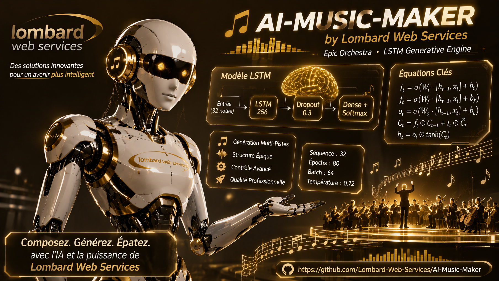

Des solutions innovantes pour un avenir plus intelligent.
Innovative solutions for a smarter future.

AI-Music-Maker est un moteur de génération musicale basé sur l'intelligence artificielle. Il utilise un modèle LSTM (Long Short-Term Memory) pour composer des morceaux orchestraux épiques à partir de vos propres fichiers audio (MP3) ou fichiers MIDI. Le système analyse les notes, apprend le style musical, puis génère une partition multipiste avec une structure dramatique avancée et une orchestration adaptative.
AI-Music-Maker is an AI-powered music generation engine. It uses an LSTM (Long Short-Term Memory) model to compose epic orchestral tracks from your own audio files (MP3) or MIDI files. The system analyzes notes, learns the musical style, and then generates a multi-track score with an advanced dramatic structure and adaptive orchestration.
Utilise Basic Pitch de Spotify pour extraire les notes de vos fichiers MP3.
Uses Spotify's Basic Pitch to extract notes from your MP3 files.
Crée des partitions pour plusieurs instruments simultanément.
Creates scores for multiple instruments simultaneously.
Détecte automatiquement les instruments présents dans votre matériel source et s'adapte.
Automatically detects instruments present in your source material and adapts.
Génère un arc dramatique complet avec 7 sections distinctes et des changements de dynamique.
Generates a complete dramatic arc with 7 distinct sections and dynamic changes.
Il est fortement recommandé d'utiliser un environnement virtuel pour isoler les dépendances de ce projet.
It is strongly recommended to use a virtual environment to isolate this project's dependencies.
Une fois le venv activé, installez les paquets requis :
Once the venv is activated, install the required packages:
basic-pitch échoue, essayez :
If basic-pitch fails, try:
pip install basic-pitch[tf] music21 numpy matplotlib
Pour convertir les fichiers MIDI générés en WAV, installez FluidSynth :
To convert generated MIDI files to WAV, install FluidSynth:
.mp3 dans le dossier solo/..mp3 files in the solo/ folder.python3 training.pypython3 training.pyoutput/generated_epic_orchestra.mid.output/generated_epic_orchestra.mid.output/generated_epic_orchestra.wav.output/generated_epic_orchestra.wav.Clonez le dépôt pour commencer à générer votre musique.
Clone the repository to start generating your music.